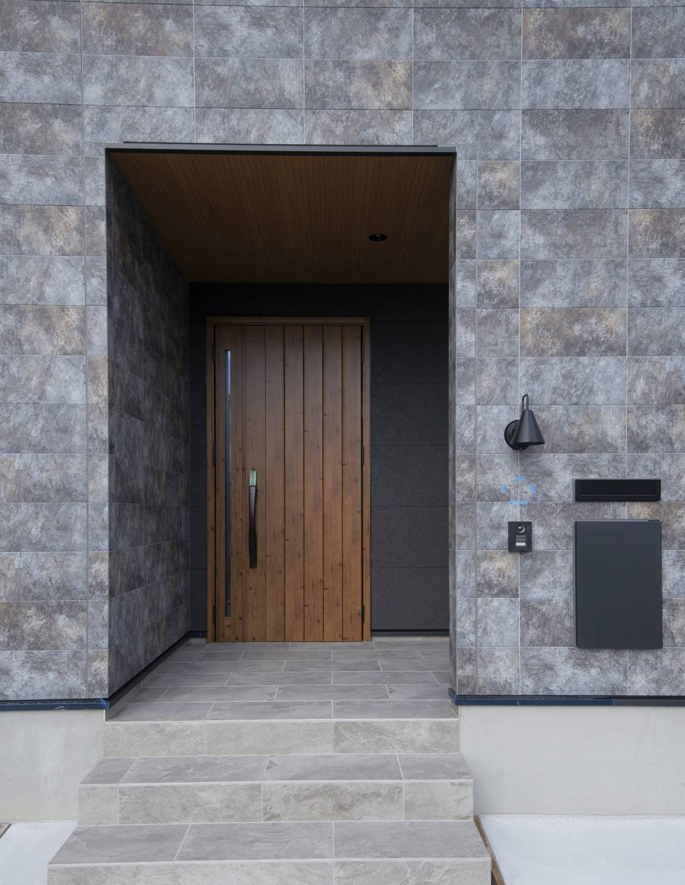
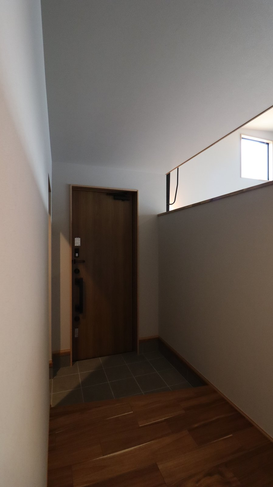

私も現場でよく思いますが、間取りは打ち合わせのあいだ何度でも描き直せます。
設備も断熱の厚みもあとから選び直せます。
ただ、土地で決まる校区はあとから選び直せません。

大阪や京都から奈良へ移って建てる方からは学校のことをよく聞かれます。
実は見落とされやすいのも学校のことです。
土地探しでは、まず駅からの距離と値段を見て、その次に日当たりや広さ、形を見ていきますが、校区が話に出るのはたいてい申し込みの直前です。
奈良は、住所で行く学校が決まります
公立の小学校と中学校は住んでいる場所によって通う学校が決まり、この区切りが通学区域、いわゆる校区です。
奈良市は、市立小学校43校ぶんの通学区域を町名ごとに公開していて、中学校の通学区域も別に用意しています。
ここで気をつけたいのが、次の一文です。
道1本、番地ひとつで、通う学校が変わることがあります。
不動産の広告に「◯◯小学校区」と書かれていることがありますが、親切な表示でもそのまま信じきらないでください。
分譲地が広い場合は、区画によって校区が分かれていることがあります。
市町村によって、決まりが違います
「奈良県はこうです」とまとめられないのがこの話のややこしいところで、決めているのは県ではなく市町村だからです。
- 奈良市住所で通う学校が決まります。
事情がある場合に限り、指定校の変更や区域外就学を申請できる仕組みがあります - 生駒市小学校に隣接校選択制があります。
希望によって、隣の校区の学校を選ぶことができます
同じ奈良県内でも前提がここまで違います。
隣の市の話を聞いて「奈良もそうだろう」と思い込むとあとで慌てます。
土地がある市町村の教育委員会のページを、必ず自分で開いてください。
土地を決める前に、見ておく4つ
1. 番地で確かめる
市のページの通学区域一覧には町名と学校名が並んでいるので、買おうとしている土地の番地がどちらに入るかを見ます。
境目にある土地なら電話で聞くのがいちばん確実で、奈良市なら教育委員会の教育総務課が窓口になります。
2. 中学校区も一緒に見る
小学校の校区と中学校の校区は別々に決められていて、同じ小学校に通っていた子が中学で分かれる地域もあります。
小学校の6年間よりそのあとの3年間のほうが部活や塾で行動範囲が広がるので、自転車で通える距離かどうかは先に見ておいてください。
3. 通学路は、朝の時間に歩く
昼間に車で通るとたいていの道は問題なく見えますが、見るべきなのは平日の朝7時半から8時半です。
- 信号のない横断歩道はあるか
- 歩道はあるか。白い線だけの道ではないか
- 抜け道になっていて、通勤の車が多くないか
- 登校班の集合場所はどこか
この時間に一度歩いておくと、地図では絶対に分からないことが見えてきます。
4. 距離だけでなく、坂も見る
奈良は坂の多い土地なので、地図に出る「徒歩12分」は平らな道を歩いた時間です。
高台の造成地は見晴らしがよく、地盤も落ち着いていることが多いですが、そのかわり帰りが上りになります。
ランドセルを背負った1年生の足でその坂を上れるかは、実際に歩いてみて判断してください。

家の中をどれだけ整えても扉の外の道は変えられません。
引っ越しの時期と、学年の切り替わり
大阪や京都から移ってくる方には、お引き渡しの時期と、学年の切り替わりを合わせるかどうかを必ずお伝えしています。
家づくりは、土地を決めてからお引き渡しまで1年前後かかるので、その途中で今の住まいを引き払うと完成までの仮住まいが必要になります。
仮住まいの場所によっては、転校が二度になることもあります。
3月のお引き渡しに間に合わせるなら、逆算すると、土地を決める時期が見えてきます。
無理に急いで土地を選ぶのは本末転倒ですが、「いつ入学するか」を先にお知らせいただけると、全体の段取りを組みやすくなります。
校区で、土地の値段は変わるのか
お答えしますが、人気のある校区は周辺より坪単価が高めになることがあります。
ただし、土地の値段を決めているのは校区だけではなく、駅までの距離や前の道路の幅、土地の形、造成の状態といった条件のほうが金額に大きく影響します。
校区で数十万円高くても地盤改良が要らなければ差は埋まります。
逆に安く見えた土地に高低差があって、外構と擁壁で200万円かかることもあります。
校区は「土地を選ぶ条件のひとつ」として比べていただいて、それだけを理由に予算を崩すのはおすすめしません。
まとめ
- 校区は町名ではなく番地で決まり、同じ地区でも分かれることがあります
- 広告の「◯◯小学校区」は、自分でも確かめる
- 決まりは市町村ごとに違い、生駒市には隣接校選択制があります
- 小学校区と中学校区は別なので、両方見ましょう
- 通学路は平日の朝に歩いて、距離ではなく坂で測りましょう
- 入学の時期が決まっているなら、土地探しの前に伝えてください

奈良の工務店シバサンホームで、
土地さがし・資金計画・打合せの窓口をしています。
モットーはスピード・誠実さ・楽しさ。